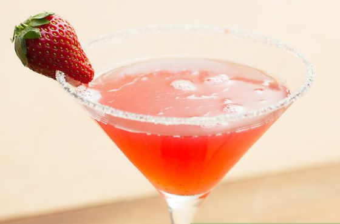
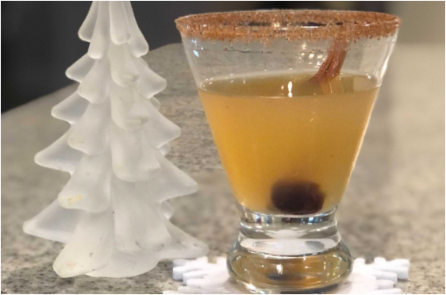

Beverages
Ingredients
- 1½ oz Pear Grey Goose Vodka
- 1 oz St. Germain Elderflower liquer
- 1 oz pineapple juice
- 1 oz sour mix
Directions
- Combine all ingredients.
- Shake with ice.
- Pour mixture in a cocktail glass.
- Add a cherry on top.
- ENJOY!!!
Submitted by Leslie Moore
My husband and I's favorite Charlotte restaurant is 131 Main. I love to enjoy a cocktail while there and the when I stumbled across the Pearfection I feel in love! It took practice to recreate this but I finally got and I love to share with everyone.

Cheesecake Factory Strawberry Martini
Ingredients
- 2 cups strawberries
- 2 shops simple syrup
- ice
- 2 shots vodka
- martina skaker
- muddler
- strainer
Directions
- Clean, core, slice and then muddle strawberries.
- Add to martini shaker (add as many as you like).
- Pour in vodka, simple syrup, and A LOT of ice.
- Shake- A LOT
- Shake some more.
- Shake a couple more times. (You want ot shake it REALLY WELL)
- Pour over a strainer into martini glass.
Submitted by Mollie Bolin
My friend Hilary makes this for us girlfriends at all of her gatherings. She makes them so well I practically refuse to come over unless I know there will be strawberry martinis. I often have several and end up very intoxicated but happy.

Mistletoe Martini
Ingredients
- 2 oz Absolute Juice (Apple flavor)
- ¾ oz brown sugar simple syrup
- ¾ oz lemon juice
*Substitute apple cider for a mocktail!
Sugar & Spice Rim
- 1 tbsp brown sugar
- ½ tsp nutmeg
- ½ tsp all spice
- ½ tsp ground cinnamon
Brown Sugar Simple Syrup
- 1 cup brown sugar
- 1 cup water
Garnish
- Cinnamon stick
- Maraschino cherry
Directions
- Add ice and water to a martini glass to chill (or place glass in the freezer for an hour prior to making your drink).
- Add ice to cocktail shaker.
- Combine lemon juice, brown sugar simple syrup, and Absolute Juice Apple vodka to the cocktail shaker.
- Place lid on shaker and shake vigorously, set aside.
- Empty ice/water out of martini glass (or remove glass from freezer).
- Trace the trim of the martini class with a lemon slice and dip the rim into the sugar and space rim mixture.
- Add cherry to the buttojm of the glass and pour contents of shaker into glass.
- Garnish with cinnamon stick.
- Enjoy responsibly!
Sugar & Spice Rim
- Mix ingredients from list together.
- Pour onto a small salad place in which you will dip your glass when preparing your cocktail.
Brown Sugar Simple Syrup
- Combine equal parts borwn sugar and water.
- Warm in a microwave or on stove until sugar is completely dissolved.
- Let cool before use.

Submitted by Jaime Omps
My wife Tamson created this cocktail for the 2020 Virtual Holiday Party. We were going to call it the “Dumpster Fire” because….well….2020. However, we decided that people probably wouldn’t want to drink that so we came up with something more festive. Enjoy the Mistletoe Martini!